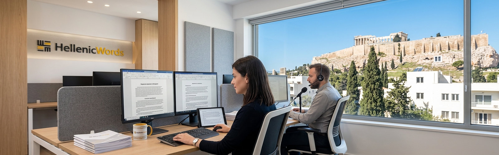

Професионални езикови решения от носители на езика. Повече от 20 години опит и безкомпромисна точност.
Запитване за оферта
Metafraseis е специализирана агенция за професионални езикови преводи, основана през 2006 година. Повече от две десетилетия ние сме доверен партньор на десетки български и гръцки компании и частни лица, които са изпозлвали нашите услуги през всички тези години.
Нашият екип се състои от лицензирани преводачи носители на езика (гръцки, български, английски), което гарантира не просто превод, а пълна езикова и културна локализация. Предлагаме широк спектър от услуги – от официални съдебни документи до бизнес консултации и лична асистенция за гърци във Варна и региона.
Професионална локализация на сайтове с фокус върху SEO и гръцкия пазар.
Превод на актове за раждане, гражданско състояние и общински удостоверения.
Медицински преводи на гръцки Прецизен превод на епикризи, изследвания и медицински експертизи.
Придружаване и превод за гръцки граждани във Варна пред институции и банки.
Сертифицирани преводи за нуждите на съда, прокуратурата и нотариуси.
Цената се определя на база стандартна преводаческа страница (1800 знака) и сложността на терминологията. Изпратете ни Вашият текст на мейла и ще направим индивидуална оферта.
Да, работим с оторизирани фирми за легализация и поставяне на Апостил в МВнР.
Стандартният срок е 2-3 работни дни, но предлагаме и експресни услуги в рамките на 24 часа.
Ценообразуването при устните преводи се определя на база ангажираност на час и е 40 евро. При ангажименти извън рамките на град Варна, всички транспортни разходи и евентуални разходи за престой се калкулират допълнително към основната цена. Моля, свържете се с нас предварително за изготвяне на прецизна оферта.
Разбира се. Имаме богат опит с ръководства за експлоатация, чертежи и спецификации.
"Най-добрият гръцки преводач, с когото сме работили. Бързина и коректност!"
— Стефан Найденов
"Изключително внимание към детайла при медицинските документи. Благодаря!"
— Елена Костова
"Професионално обслужване при покупка на имот. Всичко мина перфектно."
— Г-н Кондопулос
"Бързи, точни и на много разумни цени. Препоръчвам горещо!"
— "Логистик Плюс"
"Преводът на нашия сайт беше направен с усет към езика, а не буквално."
— Web Design Studio
"Благодарим за съдействието пред гръцките власти. Спасихте ни много време."
— Сем. Димитрови
"Високо ниво на устните преводи по време на бизнес конференцията ни."
— Инвест Груп
"Официалните преводи бяха приети от посолството без никакви забележки."
— Петър Иванов